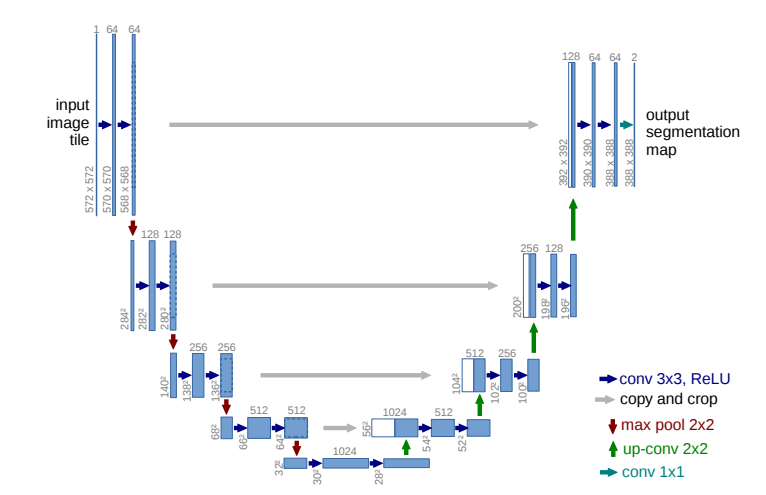
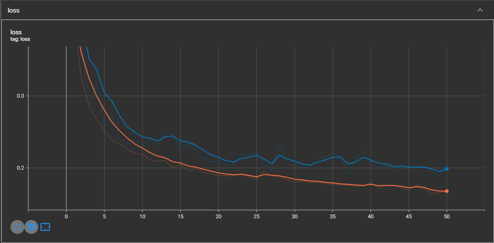
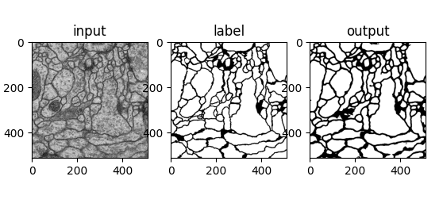
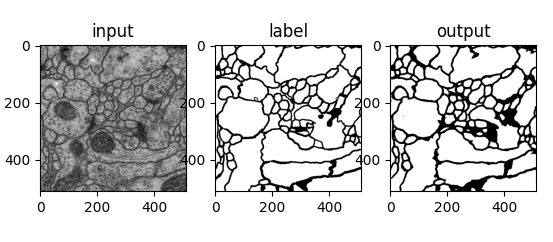
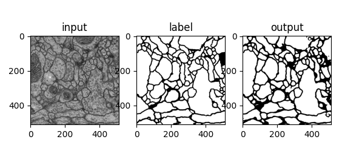

import argparse
import os
import numpy as np
import torch
import torch.nn as nn
from torch.utils.data import DataLoader
from torch.utils.tensorboard import SummaryWriter
from torchvision import transforms, datasetsU-net 구현 및 실습
논문에 나오는 구조

논문을 기반으로 네트워크 구현
+ CNN output size 계산
$ outputsize = + 1$
- 아래에서 정의하는
CBR2d를 위 식에 적용해보면 outputsize = inputsize인 것을 알 수 있음 - 이미지의 사이즈는 maxpooling을 사용하여 Width와 Height를 절반씩 줄여주는 것을 확인할 수 있음
class Unet(nn.Module):
def __init__(self):
super(Unet, self).__init__()
def CBR2d(in_channels, out_channels, kernel_size =3, stride = 1, padding = 1, bias = True): #convolution + bathnormalization + Relu
layers = []
layers = layers + [nn.Conv2d(in_channels=in_channels, out_channels=out_channels,
kernel_size=kernel_size, stride=stride, padding= padding,
bias=bias)]
layers = layers + [nn.BatchNorm2d(num_features = out_channels)]
layers = layers + [nn.ReLU()]
cbr = nn.Sequential(*layers)
return cbr
# contracting(encoder)
self.enc1_1 = CBR2d(in_channels=1, out_channels=64)
self.enc1_2 = CBR2d(in_channels=64, out_channels=64)
self.pool1 = nn.MaxPool2d(kernel_size=2)
self.enc2_1 = CBR2d(in_channels=64, out_channels=128)
self.enc2_2 = CBR2d(in_channels=128, out_channels=128)
self.pool2 = nn.MaxPool2d(kernel_size=2)
self.enc3_1 = CBR2d(in_channels=128, out_channels=256)
self.enc3_2 = CBR2d(in_channels=256, out_channels=256)
self.pool3 = nn.MaxPool2d(kernel_size=2)
self.enc4_1 = CBR2d(in_channels=256, out_channels=512)
self.enc4_2 = CBR2d(in_channels=512, out_channels=512)
self.pool4 = nn.MaxPool2d(kernel_size=2)
self.enc5_1 = CBR2d(in_channels=512, out_channels=1024)
## Expansive (decoder)
self.dec5_2 = CBR2d(in_channels=1024, out_channels=512)
self.unpool4 = nn.ConvTranspose2d(in_channels=512, out_channels=512,
kernel_size=2, stride=2, padding= 0,bias=True)
self.dec4_2 = CBR2d(in_channels= 2 * 512, out_channels=512)
self.dec4_1 = CBR2d(in_channels=512, out_channels=256)
self.unpool3 = nn.ConvTranspose2d(in_channels= 256, out_channels=256,
kernel_size=2, stride=2, padding= 0,bias=True)
self.dec3_2 = CBR2d(in_channels= 2 * 256, out_channels=256)
self.dec3_1 = CBR2d(in_channels=256, out_channels=128)
self.unpool2 = nn.ConvTranspose2d(in_channels= 128, out_channels=128,
kernel_size=2, stride=2, padding= 0,bias=True)
self.dec2_2 = CBR2d(in_channels= 2 * 128, out_channels=128)
self.dec2_1 = CBR2d(in_channels=128, out_channels=64)
self.unpool1 = nn.ConvTranspose2d(in_channels= 64, out_channels=64,
kernel_size=2, stride=2, padding= 0,bias=True)
self.dec1_2 = CBR2d(in_channels= 2 * 64, out_channels=64)
self.dec1_1 = CBR2d(in_channels=64, out_channels=64)
self.fc = nn.Conv2d(in_channels=64, out_channels=2, kernel_size=1,stride=1, padding = 0, bias = True)
def forward(self, x):
enc1_1 = self.enc1_1(x)
enc1_2 = self.enc1_2(enc1_1)
pool1 = self.pool1(enc1_2)
enc2_1 = self.enc2_1(pool1)
enc2_2 = self.enc2_2(enc2_1)
pool2 = self.pool2(enc2_2)
enc3_1 = self.enc3_1(pool2)
enc3_2 = self.enc3_2(enc3_1)
pool3 = self.pool3(enc3_2)
enc4_1 = self.enc4_1(pool3)
enc4_2 = self.enc4_2(enc4_1)
pool4 = self.pool4(enc4_2)
enc5_1 = self.enc5_1(pool4)
dec5_1 = self.dec5_1(enc5_1)
unpool4 = self.unpool4(dec5_1)
cat4 = torch.cat((unpool4, enc4_2), dim=1)
dec4_2 = self.dec4_2(cat4)
dec4_1 = self.dec4_1(dec4_2)
unpool3 = self.unpool3(dec4_1)
cat3 = torch.cat((unpool3, enc3_2), dim=1)
dec3_2 = self.dec3_2(cat3)
dec3_1 = self.dec3_1(dec3_2)
unpool2 = self.unpool2(dec3_1)
cat2 = torch.cat((unpool2, enc2_2), dim=1)
dec2_2 = self.dec2_2(cat2)
dec2_1 = self.dec2_1(dec2_2)
unpool1 = self.unpool1(dec2_1)
cat1 = torch.cat((unpool1, enc1_2), dim=1)
dec1_2 = self.dec1_2(cat1)
dec1_1 = self.dec1_1(dec1_2)
x = self.fc(dec1_1)
return x함수 설명
1. torch.nn.ConvTranspose2d() : upsampling시 사용하는 함수
- 사용 예시
self.unpool1 = nn.ConvTranspose2d(in_channels= 64, out_channels=64, kernel_size=2, stride=2, padding= 0,bias=True)https://cumulu-s.tistory.com/29
2. torch.cat() : skip connection을 구현할 때 사용
- dim = 1로 지정하면 채널을 기준으로 concat
- dim = 0일 때 -> batch를 기준으로
- dim = 2일 때 -> height를 기준으로
- dim = 3일 떄 -> width를 기준으로a = torch.tensor([[[[1,2,3,4],[5,6,7,8],[9,10,11,12]]]])
b = torch.tensor([[[[1,2,3,4],[5,6,7,8],[9,10,11,12]]]])
print(a)tensor([[[[ 1, 2, 3, 4],
[ 5, 6, 7, 8],
[ 9, 10, 11, 12]]]])test_dim0 = torch.cat((a,b),dim = 0)
print("dim = 0일 때: \n",test_dim0, '\n', test_dim0.shape)dim = 0일 때:
tensor([[[[ 1, 2, 3, 4],
[ 5, 6, 7, 8],
[ 9, 10, 11, 12]]],
[[[ 1, 2, 3, 4],
[ 5, 6, 7, 8],
[ 9, 10, 11, 12]]]])
torch.Size([2, 1, 3, 4])test_dim1 = torch.cat((a,b),dim = 1)
print("dim = 1일 때: \n",test_dim1, '\n', test_dim1.shape)dim = 1일 때:
tensor([[[[ 1, 2, 3, 4],
[ 5, 6, 7, 8],
[ 9, 10, 11, 12]],
[[ 1, 2, 3, 4],
[ 5, 6, 7, 8],
[ 9, 10, 11, 12]]]])
torch.Size([1, 2, 3, 4])test_dim2 = torch.cat((a,b),dim = 2)
print("dim = 2일 때: \n",test_dim2, '\n', test_dim2.shape)dim = 2일 때:
tensor([[[[ 1, 2, 3, 4],
[ 5, 6, 7, 8],
[ 9, 10, 11, 12],
[ 1, 2, 3, 4],
[ 5, 6, 7, 8],
[ 9, 10, 11, 12]]]])
torch.Size([1, 1, 6, 4])test_dim3 = torch.cat((a,b),dim = 3)
print("dim = 3일 때: \n",test_dim3, '\n', test_dim3.shape)dim = 3일 때:
tensor([[[[ 1, 2, 3, 4, 1, 2, 3, 4],
[ 5, 6, 7, 8, 5, 6, 7, 8],
[ 9, 10, 11, 12, 9, 10, 11, 12]]]])
torch.Size([1, 1, 3, 8])결과
- loss 곡선

- 만들어진 annotation



(참고) U-net 훈련을 위한 .py 파일
import os
import numpy as np
from PIL import Image
import matplotlib.pyplot as plt
import torch
import torch.nn as nn
from torchvision import transforms, datasets
from torch.utils.data import DataLoader
from torch.utils.tensorboard import SummaryWriter
## 트레이닝 파라미터 설정
lr = 1e-3
batch_size = 2
num_epoch = 50
data_dir = './datasets'
ckpt_dir = './checkpoint'
log_dir = './log'
##
class Dataset(torch.utils.data.Dataset):
def __init__(self, data_dir, transform=None):
self.data_dir = data_dir
self.transform = transform
lst_data = os.listdir(self.data_dir)
lst_label = [f for f in lst_data if f.startswith('label')]
lst_input = [f for f in lst_data if f.startswith('input')]
lst_label.sort()
lst_input.sort()
self.lst_label = lst_label
self.lst_input = lst_input
def __len__(self):
return len(self.lst_label)
def __getitem__(self, index):
label = np.load(os.path.join(self.data_dir, self.lst_label[index]))
input = np.load(os.path.join(self.data_dir, self.lst_input[index]))
label = label/255.0
input = input/255.0
if label.ndim == 2:
label = label[:, :, np.newaxis]
if input.ndim == 2:
input = input[:, :, np.newaxis]
data = {'input': input, 'label': label}
if self.transform:
data = self.transform(data)
return data
##
class ToTensor(object):
def __call__(self, data):
label, input = data['label'], data['input']
label = label.transpose((2, 0, 1)).astype(np.float32)
input = input.transpose((2, 0, 1)).astype(np.float32)
data = {'label': torch.from_numpy(label), 'input': torch.from_numpy(input)}
return data
class Normalization(object):
def __init__(self, mean = 0.5, std = 0.5):
self.mean = mean
self.std = std
def __call__(self, data):
label, input = data['label'], data['input']
input = (input - self.mean) / self.std
data = {'label': label, 'input': input}
return data
class RandomFlip(object):
def __call__(self, data):
label, input = data['label'], data['input']
if np.random.rand() > 0.5:
label = np.fliplr(label)
input = np.fliplr(input)
if np.random.rand() > 0.5:
label = np.flipud(label)
input = np.flipud(input)
data = {'label': label, 'input': input}
return data
## 네트워크 구축하기
class UNet(nn.Module):
def __init__(self):
super(UNet, self).__init__()
def CBR2d(in_channels, out_channels, kernel_size=3, stride=1, padding=1, bias=True):
layers = []
layers += [nn.Conv2d(in_channels=in_channels, out_channels=out_channels,
kernel_size=kernel_size, stride=stride, padding=padding,
bias=bias)]
layers += [nn.BatchNorm2d(num_features=out_channels)]
layers += [nn.ReLU()]
cbr = nn.Sequential(*layers)
return cbr
# Contracting path
self.enc1_1 = CBR2d(in_channels=1, out_channels=64)
self.enc1_2 = CBR2d(in_channels=64, out_channels=64)
self.pool1 = nn.MaxPool2d(kernel_size=2)
self.enc2_1 = CBR2d(in_channels=64, out_channels=128)
self.enc2_2 = CBR2d(in_channels=128, out_channels=128)
self.pool2 = nn.MaxPool2d(kernel_size=2)
self.enc3_1 = CBR2d(in_channels=128, out_channels=256)
self.enc3_2 = CBR2d(in_channels=256, out_channels=256)
self.pool3 = nn.MaxPool2d(kernel_size=2)
self.enc4_1 = CBR2d(in_channels=256, out_channels=512)
self.enc4_2 = CBR2d(in_channels=512, out_channels=512)
self.pool4 = nn.MaxPool2d(kernel_size=2)
self.enc5_1 = CBR2d(in_channels=512, out_channels=1024)
# Expansive path
self.dec5_1 = CBR2d(in_channels=1024, out_channels=512)
self.unpool4 = nn.ConvTranspose2d(in_channels=512, out_channels=512,
kernel_size=2, stride=2, padding=0, bias=True)
self.dec4_2 = CBR2d(in_channels=2 * 512, out_channels=512)
self.dec4_1 = CBR2d(in_channels=512, out_channels=256)
self.unpool3 = nn.ConvTranspose2d(in_channels=256, out_channels=256,
kernel_size=2, stride=2, padding=0, bias=True)
self.dec3_2 = CBR2d(in_channels=2 * 256, out_channels=256)
self.dec3_1 = CBR2d(in_channels=256, out_channels=128)
self.unpool2 = nn.ConvTranspose2d(in_channels=128, out_channels=128,
kernel_size=2, stride=2, padding=0, bias=True)
self.dec2_2 = CBR2d(in_channels=2 * 128, out_channels=128)
self.dec2_1 = CBR2d(in_channels=128, out_channels=64)
self.unpool1 = nn.ConvTranspose2d(in_channels=64, out_channels=64,
kernel_size=2, stride=2, padding=0, bias=True)
self.dec1_2 = CBR2d(in_channels=2 * 64, out_channels=64)
self.dec1_1 = CBR2d(in_channels=64, out_channels=64)
self.fc = nn.Conv2d(in_channels=64, out_channels=1, kernel_size=1, stride=1, padding=0, bias=True)
def forward(self, x):
enc1_1 = self.enc1_1(x)
enc1_2 = self.enc1_2(enc1_1)
pool1 = self.pool1(enc1_2)
enc2_1 = self.enc2_1(pool1)
enc2_2 = self.enc2_2(enc2_1)
pool2 = self.pool2(enc2_2)
enc3_1 = self.enc3_1(pool2)
enc3_2 = self.enc3_2(enc3_1)
pool3 = self.pool3(enc3_2)
enc4_1 = self.enc4_1(pool3)
enc4_2 = self.enc4_2(enc4_1)
pool4 = self.pool4(enc4_2)
enc5_1 = self.enc5_1(pool4)
dec5_1 = self.dec5_1(enc5_1)
unpool4 = self.unpool4(dec5_1)
cat4 = torch.cat((unpool4, enc4_2), dim=1)
dec4_2 = self.dec4_2(cat4)
dec4_1 = self.dec4_1(dec4_2)
unpool3 = self.unpool3(dec4_1)
cat3 = torch.cat((unpool3, enc3_2), dim=1)
dec3_2 = self.dec3_2(cat3)
dec3_1 = self.dec3_1(dec3_2)
unpool2 = self.unpool2(dec3_1)
cat2 = torch.cat((unpool2, enc2_2), dim=1)
dec2_2 = self.dec2_2(cat2)
dec2_1 = self.dec2_1(dec2_2)
unpool1 = self.unpool1(dec2_1)
cat1 = torch.cat((unpool1, enc1_2), dim=1)
dec1_2 = self.dec1_2(cat1)
dec1_1 = self.dec1_1(dec1_2)
x = self.fc(dec1_1)
return x
## 네트워크 학습하기
transform = transforms.Compose([Normalization(mean=0.5, std=0.5), RandomFlip(), ToTensor()])
dataset_train = Dataset(data_dir=os.path.join(data_dir, 'train'), transform=transform)
loader_train = DataLoader(dataset_train, batch_size=batch_size, shuffle=True, num_workers=0)
dataset_val = Dataset(data_dir=os.path.join(data_dir, 'val'), transform=transform)
loader_val = DataLoader(dataset_val, batch_size=batch_size, shuffle=True, num_workers=0)
device = torch.device('cuda' if torch.cuda.is_available() else 'cpu')
## 네트워크 생성하기
net = UNet().to(device)
fn_loss = nn.BCEWithLogitsLoss().to(device)
optim = torch.optim.Adam(net.parameters(),lr=lr)
num_data_train = len(dataset_train)
num_data_val = len(dataset_val)
num_batch_train = np.ceil(num_data_train / batch_size)
num_batch_val = np.ceil(num_data_val / batch_size)
## function
fn_tonumpy = lambda x: x.to('cpu').detach().numpy().transpose(0, 2, 3, 1)
fn_denorm = lambda x, mean, std: (x * std) + mean
fn_clss = lambda x: 1.0*(x>0.5)
## tensorboard를 사용하기 위한 SummaryWriter 설정
writer_train = SummaryWriter(log_dir=os.path.join(log_dir, 'train'))
writer_val = SummaryWriter(log_dir=os.path.join(log_dir, 'val'))
## 네트워크 학습시키기
st_epoch = 0
## 네트워크 저장하기
def save(ckpt_dir, net, optim, epoch):
if not os.path.exists(ckpt_dir):
os.makedirs(ckpt_dir)
torch.save({'net': net.state_dict(), 'optim': optim.state_dict()},
"%s/model_epoch%d.pth" % (ckpt_dir, epoch))
## 네트워크 불러오기
def load(ckpt_dir, net, optim):
if not os.path.exists(ckpt_dir):
epoch = 0
return net, optim, epoch
ckpt_lst = os.listdir(ckpt_dir)
ckpt_lst.sort(key=lambda f: int(''.join(filter(str.isdigit, f))))
dict_model = torch.load('%s/%s' % (ckpt_dir, ckpt_lst[-1]))
net.load_state_dict(dict_model['net'])
optim.load_state_dict(dict_model['optim'])
epoch = int(ckpt_lst[-1].split('epoch')[1].split('.pth')[0])
return net, optim, epoch
#net, optim, st_epoch = load(ckpt_dir=ckpt_dir, net=net, optim=optim)
for epoch in range(st_epoch + 1, num_epoch + 1):
net.train()
loss_arr = []
for batch, data in enumerate(loader_train, 1):
# forward pass
label = data['label'].to(device)
input = data['input'].to(device)
output = net(input)
# backward pass
optim.zero_grad()
loss = fn_loss(output, label)
loss.backward()
optim.step()
# 손실함수 계산
loss_arr += [loss.item()]
print("TRAIN: EPOCH %04d / %04d | BATCH %04d / %04d | LOSS %.4f" %
(epoch, num_epoch, batch, num_batch_train, np.mean(loss_arr)))
# Tensorboard 저장하기
label = fn_tonumpy(label)
input = fn_tonumpy(fn_denorm(input, mean=0.5, std=0.5))
output = fn_tonumpy(fn_clss(output))
writer_train.add_image('label', label, num_batch_train * (epoch - 1) + batch, dataformats='NHWC')
writer_train.add_image('input', input, num_batch_train * (epoch - 1) + batch, dataformats='NHWC')
writer_train.add_image('output', output, num_batch_train * (epoch - 1) + batch, dataformats='NHWC')
writer_train.add_scalar('loss', np.mean(loss_arr), epoch)
with torch.no_grad():
net.eval()
loss_arr = []
for batch, data in enumerate(loader_val, 1):
# forward pass
label = data['label'].to(device)
input = data['input'].to(device)
output = net(input)
# 손실함수 계산하기
loss = fn_loss(output, label)
loss_arr += [loss.item()]
print("VALID: EPOCH %04d / %04d | BATCH %04d / %04d | LOSS %.4f" %
(epoch, num_epoch, batch, num_batch_val, np.mean(loss_arr)))
# Tensorboard 저장하기
label = fn_tonumpy(label)
input = fn_tonumpy(fn_denorm(input, mean=0.5, std=0.5))
output = fn_tonumpy(fn_clss(output))
writer_val.add_image('label', label, num_batch_val * (epoch - 1) + batch, dataformats='NHWC')
writer_val.add_image('input', input, num_batch_val * (epoch - 1) + batch, dataformats='NHWC')
writer_val.add_image('output', output, num_batch_val * (epoch - 1) + batch, dataformats='NHWC')
writer_val.add_scalar('loss', np.mean(loss_arr), epoch)
if epoch % 50 == 0:
save(ckpt_dir=ckpt_dir, net=net, optim=optim, epoch=epoch)
writer_train.close()
writer_val.close()